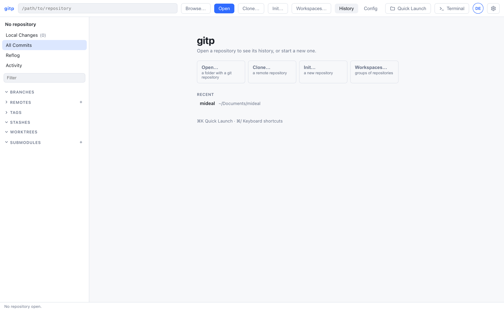
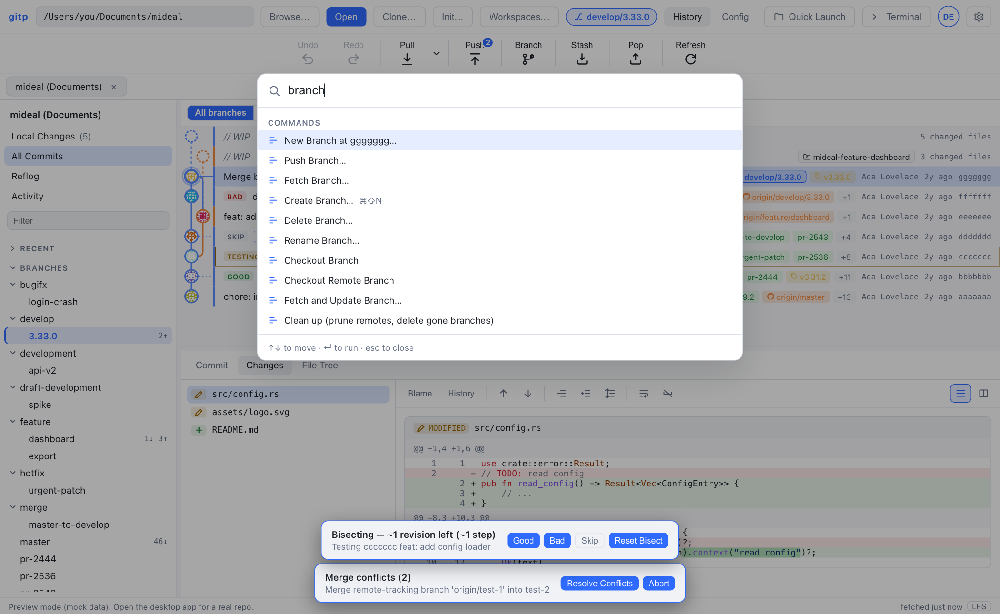
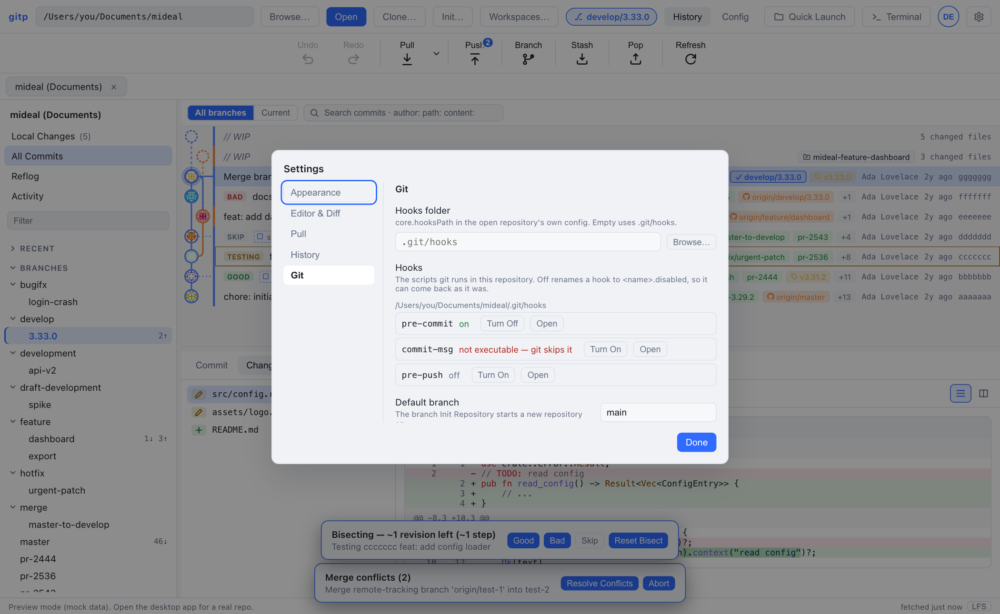

gitp · desktop git client · user guide
Each feature of gitp, and how to use it
gitp is a desktop git client for macOS with a commit graph, diffs and a commit box. It also has branch and tag menus, a 3-way conflict resolver, one-step undo, pull requests through the GitHub CLI, and an embedded terminal. This guide goes from the first window to the pull request review, one feature at a time. The facts come from the source files of revision 83d65ce, with the file and the line at each step. The images are captures of the browser preview of the same revision, which shows example data. The text is written with ASD-STE100 rules, STE-style, and a person did not compare it with the full standard.
Start the app
npm --prefix crates/gitp-gui/webui install # one time
npm --prefix crates/gitp-gui/webui run tauri dev # opens the native windowThe window opens with the welcome screen of step 01. After run tauri build, the built app is in target/release/bundle/macos/gitp.app, see README.md · lines 48–71.
The window, part by part
Know the 6 areas of the window, because each subsequent step names them.
Diagram
Capture
![The gitp window in the browser preview with example data. The top bar shows the path /Users/you/Documents/mideal, the Browse, Open, Clone, Init and Workspaces buttons, the branch chip develop/3.33.0, the History and Config tabs, Quick Launch, Terminal and Settings. The action bar shows Undo, Redo, Pull, Push with a badge 2, Branch, Stash, Pop and Refresh. The sidebar lists Local Changes (5), All Commits, Reflog, Activity, the Branches folders bugifx, develop, development, draft-development, feature, hotfix and merge, then Remotes, Pull Requests, Tags, Stashes and Worktrees. The graph shows two WIP rows, the commit Merge branch 'feature/widget', bisect badges BAD, SKIP, TESTING and GOOD, the Changes tab with the diff of src/config.rs, and two banners for a bisect and for merge conflicts.](img/history.png)
toolbar.ts · lines 36–45.The sources of the facts in this guide
The feature list is the table in README.md · lines 17–29. Each step gives the source file of the behavior that it tells. The captures come from the browser preview (npm run dev in crates/gitp-gui/webui). The preview shows example data and not a repository of your own.
Open, clone and arrange repositories
Get a repository into a tab, then keep the repositories that you use near.
Capture

views/welcome.ts · lines 27–66. The favorites, with their ⌘1 to ⌘9 keys, come before the recent repositories.Open a repository
- Click "Open" on the welcome screen, or "Browse" in the top bar, and select a folder.
- Or type a path into the field of the top bar, then click "Open".
- Or press ⌘O.
Each open repository is a tab below the top bar. Drag a tab to move it. Right-click a tab to give it a different name, or to make it a favorite.
Clone or init
"Clone" asks for a URL and a destination. The options are the branch, the depth, a single branch, and the submodules. "Init" makes a new repository with a .gitignore template and the default branch from Settings. The two commands open the result in a tab.
Favorites and workspaces
A favorite is a repository with a number key. ⌘1 opens the first favorite, in a new tab if necessary. A workspace is a named group of repositories. Open "Workspaces" to fetch, pull, open or show all of them in one step, see README.md · line 19.
Symptom: "Browse" does nothing in the browser preview
The folder picker is a native dialog of the desktop app. The preview shows the message "The folder picker is only available in the desktop app.", see main.ts · lines 159–163. Use the desktop window for your own repositories.
Read the history
Find a commit, see what it changed, and compare two points of the history.
The commit graph
The graph in the main panel shows the commits, newest first, with one lane for each line of development. Click a commit to see it in the detail pane. The rows at the top with // WIP are the uncommitted changes of this worktree and of each other worktree. Stashes are nodes in the graph too.
- "All branches / Current" at the top of the graph sets the scope.
- Right-click a branch label to hide it, to solo it, or to pin its lane to the left.
- Hover a branch label: the commits that are not on that branch fade. Settings turns this off.
- Right-click the column header to show or hide the Author, Date and SHA columns, and drag a header to move it.
- Click the funnel in the Author column to show one author only.
Search
Type in the search box above the graph. Each word must occur in the message, the author or the SHA. A prefix narrows the search, see index.html · line 142:
| Prefix | Finds |
|---|---|
| author:name | Commits by that author, by name or email. |
| path:src/*.rs | Commits that touch files on that path or glob. |
| content:text | Commits that add or remove that text. |
| after:2026-01-01 | Commits after that author date. before: is the opposite. |
Keys in the graph
Move with ↑ ↓ or J K, one page with PgUp PgDn, and to the ends with Home End. ↵ moves the focus into the diff. Esc closes a comparison, see keyboard.ts · lines 55–95.
The detail pane
For the selected commit the pane has 3 tabs. "Commit" has the message, the author and the signature. "Changes" has the diffs. "File Tree" has the folders, see views/detail.ts · line 279. Open a file in the Changes tab, and the toolbar gives "Blame" and "History" for that file, see views/detail.ts · lines 373–374.
Diff toolbar
The diff toolbar has the unified view or the split view, the word diff and syntax colors. It also has wrap for long lines, ignore whitespace, and more context lines. An image file shows the previous and the new image side by side. A diff longer than 5,000 lines stops with a notice and a "Show full diff" button, see diff.rs · MAX_DIFF_LINES.
Compare
⌘-click two commits to compare them. ⇧-click a range of commits for one diff of the full range. Right-click a branch or a commit and select "Compare" for a two-dot or a three-dot comparison. "Compare with Working Directory" compares with the working tree.
"Open in Diff Tool" opens an external diff tool, through git difftool and your diff.tool setting, see external_tool.rs · lines 1–4.
Why a long diff stops at 5,000 lines
A file with 200,000 lines made the window slow for all other work. The backend cuts the diff at full hunks, so the hunk numbers stay correct, and the notice gives the remaining lines on request.
Stage, commit and stash
Make a commit from a part of your changes, and put the remaining changes away.
Capture
![The Local Changes view of the preview, with Local Changes (5) selected in the sidebar. The Unstaged (5) list shows the folders assets, libs and src, the files logo.svg, shared, config.rs, notes.md and README.md, each with a checkbox and a status icon, and a Stage All button. The Staged (0) list shows the text No staged changes and an Unstage All button. The right side shows the text Select a file to view its changes. The commit box has a summary field, a Description field, and the toggles Amend, Sign, Skip hooks and Push after commit.](img/changes.png)
Stage and unstage
- Select "Local Changes" in the sidebar.
- Click the arrow of a file, or double-click the file, to move it between the lists.
- In the diff, click "Stage block" on a hunk to stage that hunk only.
- Select some lines in the diff, then click "Stage lines" to stage those lines only.
- Click "Discard" on a file, a block or lines to remove the change from the working tree.
Undo puts a discarded change back, see undo.rs · lines 128–140. The buttons "Stage all" and "Unstage all" move everything, and ⌘⇧A and ⌘⇧U do the same. A file in a different text encoding is staged by block and line too, with the encoding from Settings → Git.
Commit
Type the message in the commit box, then click "Commit" or press ⌘↵ in the message. The box has these options:
- "Amend" puts the staged changes into the last commit, and starts the message from its text.
- "Sign" signs the commit with your GPG or SSH key. The toggle shows only when git has a key, see
signature.rs · lines 134–150. - "Skip hooks" commits with
--no-verify. - "Push after commit" pushes when the commit is complete.
A commit.template in your config fills the message with the template text, without the comment lines.
Stash
Click "Stash" in the action bar, or press ⌘⇧S. The dialog has a message field, and the options "staged only" and "include untracked files". "Pop" applies and removes the newest stash.
Right-click a stash in the sidebar to apply it, to rename it, to save it as a patch, or to drop it.
Undo and Stash & Switch
Undo includes the save, the pop, the apply, the new name and the drop of a stash, see undo.rs · lines 160–200. When you switch to a branch and local changes block the switch, the dialog offers Stash & Switch. It stashes the changes, switches, and applies the changes on the new branch.
Symptom: Undo of a stash pop says "The repository changed since that action"
Undo of a pop stashes the tree again. It does this only when the tree is as the pop made it. An edit after the pop blocks the undo, so the edit does not go into the stash by mistake, see undo.rs · StashApplied. In this condition, stash by hand.
Branches, tags, remotes and worktrees
Switch, merge and publish without the command line.
Switch and make branches
- Click the branch chip in the top bar. The menu has "Copy Branch Name", the branches that you selected lately, "All Branches" and "Create Branch", see
main.ts · openBranchChipMenu. - Click "Branch" in the action bar, or press ⌘B, for the list of local branches and a field for a new one.
- Double-click a branch in the sidebar or in the graph to check it out.
- Right-click a branch for its menu. The menu has Checkout, Compare, New Branch here, New Tag here, Merge into the current branch, Rebase, Fetch, Push, Set Upstream, Rename, and Delete.
Merge with a dry run
The "Merge into" submenu and the drag-and-drop menu open below one line: "No conflicts expected", or "N files would conflict: a, b". The line comes from git merge-tree, which merges in memory and changes nothing, see merge_preview.rs · lines 1–6. The rebase confirmation has the same line. The modes are Merge, no fast-forward, fast-forward only and squash.
Drag and drop
Drag a branch label onto a different branch, in the graph or in the sidebar. The menu at the drop point shows the applicable actions, see ref-drop.ts · lines 35–52. They are: merge into the current branch, rebase the current branch, reset, fast-forward, or push to the remote branch.
Tags, remotes, Git Flow and LFS
- Tags: right-click a commit and select "New Tag here". A tag can be annotated with a message. Push a tag to a remote, or delete it there, from the menu of the tag.
- Remotes: the Remotes section of the sidebar adds, renames and removes remotes, and sets a URL. Undo cancels an add, a rename and a URL change.
- Git Flow: Quick Launch has Initialize, Start and Finish for features, releases and hotfixes, done with plain git, see
README.md · line 26. - Git LFS: the status bar shows the LFS state. Quick Launch adds a pattern for LFS, and fetches or pulls the LFS objects. A pointer file shows as a pointer in the diff.
Worktrees
The Worktrees section shows each worktree with its branch, the count of changed files, and the ahead and behind counts. Add a worktree from a branch, a commit or a tag, or drop a branch on the section. Double-click a worktree to open it as a tab.
The menu moves, locks, prunes with a dry run, or removes a worktree. A worktree with unsaved work gives a warning before the removal, see README.md · line 27.
Why a branch in a different worktree does not check out here
Git lets one worktree have a branch. For that branch the menu offers "Open Worktree" and not a checkout, and a worktree badge identifies the branch in the graph.
Change the history, and undo it
Rewrite commits with a safety net: one Undo for the last action.
Diagram
--keep). The arrows show the direction of the change, see undo.rs · lines 1–12.Rewrite tools
All of these are in the right-click menu of a commit in the graph:
- "Cherry-pick" one commit. Or select some commits and open an interactive plan, to pick, squash, reword or drop each one before it operates.
- "Revert" makes a new commit that cancels the selected one.
- "Reset" the current branch here: soft keeps the changes in the index, mixed keeps them in the working tree, hard discards them. Before a hard reset, gitp saves the uncommitted work in a hidden commit. Undo puts the commits and the work back, see
undo.rs · backup_uncommitted_work. - "Interactive rebase" onto this commit opens the plan editor. Drag to reorder, and set pick, squash, fixup, reword, edit or drop for each row.
- "Restore file from this commit" and "Revert block" act on one file or one hunk of a commit.
- "Start bisect here", then mark each commit Good, Bad or Skip in the banner. The banner shows the commits that remain.
Conflicts
When a merge, rebase, cherry-pick, revert or squash stops on a conflict, a banner offers "Resolve Conflicts" and "Abort". The resolver shows the two sides and the result for each file. Select a side, a block, or "Take Ours" / "Take Theirs" for the full file. The resolver asks before it overwrites a file that you edited by hand. "Finish" commits with the message that git prepared, see README.md · line 24.
Undo and redo
The "Undo" and "Redo" buttons in the action bar, or ⌘Z and ⌘⇧Z, cancel the last action. The button label tells the action, for example "Undo Commit". One action is kept at a time. README.md · line 25 has the list of reversible actions. They are: commits, resets, merges, checkouts, branch and tag changes, fast-forwards, staging, discards, file edits, patches, ignore and stop-tracking, the stash actions, and remote changes.
Reflog and Activity
"Reflog" in the sidebar shows where HEAD was, for the times when Undo cannot help. "Activity" shows each git command that gitp started, with the time, the duration and the last lines of its output, see activity.rs · lines 1–10. A hook that stopped with an error, or a rejected push, is there after its message is gone from the status bar.
Symptom: Undo is grey after a merge, rebase or bisect starts
Undo must not operate in a session that git keeps in .git. While a merge, rebase, cherry-pick, revert or bisect is open, gitp refuses Undo and Redo, see undo.rs · operation_in_progress. Finish or abort the session first.
Pull requests and review drafts
Review a pull request in the app, with comments that you approve before they go to GitHub.
Capture
![Pull request #42 Retry the identity check when the provider times out, open in the main panel of the preview. The header shows the state Open, the author octocat, the branches main ← feature/identity-retry, the labels approved, enhancement and backend, and the buttons Check Out, Check Out in New Worktree, Review, Generate Drafts, Load Review File, Open on GitHub and Refresh. The Files changed (2) tab is active. On the left a folder tree shows src/identity with client.ts and retry.ts, and retry.ts has a comment count of 1. On the right the diff of src/identity/retry.ts shows the added retry loop, with a review thread from hubot and octocat below line 6.](img/pr-files.png)
views/pull-request.ts · annotatedFile. Click a line to write a comment on it.Sign in and list
Pull requests come through the GitHub CLI, gh. gitp keeps no token, see gh.rs · lines 1–3. Install gh with Homebrew, then click "Sign In" in the Pull Requests section of the sidebar or in Settings → Git. The section shows the open pull requests with the filters "All", "Created by me" and "Review requested", and a search by title, number, author or branch.
View and act
- Click a pull request to open it in the main panel. The tabs are "Conversation", "Files changed" and "Checks".
- "Check Out" makes a local branch with the head branch as its upstream. "Check Out in New Worktree" does the same in a new folder.
- "Review ▾" opens Approve, Request Changes or Comment, each with a message dialog. gitp asks for a confirmation before each post.
- Write a comment at the bottom of the conversation, reply in a thread, or click a diff line for a line comment.
- The Files changed tab has the file tree, the unified or the split view, Wrap lines, and a search of file names and code.
Diagram
gh.rs · review_with_comments. The arrows show the direction of the data.Capture
![The Drafts tab of pull request #42 in the preview, after Generate Drafts and Approve All. The bar reads 3 drafts · 3 approved · 1 can't be posted (line not in this diff), with the buttons Approve All, Clear, a Comment verdict selector and Post 2 approved. A review message field is empty. Three cards follow: src/identity/retry.ts:6 with the tag blocking and a suggestion block, src/identity/client.ts:11 with the tag minor, and src/identity/retry.ts:40 with the tag nit and the warning line not in this diff.](img/pr-drafts.png)
review-drafts.ts · checkAnchor. You can edit the text of each card before the post.Load a review file
- Open the pull request, then click "Load Review File".
- Select a Markdown or a JSON file.
- In the Drafts tab, edit a text, and click "Approve" or "Discard" on each card.
- Select the verdict. If the verdict is "Request changes", type a message.
- Click "Post N approved", then confirm the dialog. The posted drafts go out of the tab.
The Markdown shape is one ### path/to/file:line heading for each finding, a **Severity:** line, and the comment between the <!-- copy:start --> and <!-- copy:end --> markers, see review-drafts.ts · lines 6–15.
Generate drafts with a command
"Generate Drafts" starts the review command from Settings → Git, with the diff of the pull request as its input. The command is a shell line in a login shell. The diff comes on its stdin.
The variables GITP_PR_NUMBER, GITP_PR_REPO and GITP_PR_URL are set, see gh.rs · generate_review_drafts. The default is the Claude Code CLI:
Default command
crates/gitp-gui/webui/src/prefs.ts · lines 601–602export const DEFAULT_REVIEW_COMMAND =
"claude -p --model opus --effort medium 'Review the pull request diff on stdin …'" // the full prompt followsWhile it operates
The command has 15 minutes. "Cancel" in the status bar stops it. The CLI must be signed in: start claude one time in a terminal. The output goes through the same parser as a review file.
Symptom: the error dialog of Generate Drafts says "command not found: claude"
The login shell did not find the CLI on its PATH. Make sure that claude starts in a new terminal window. If necessary, write the full path of the CLI in the review command in Settings.
Symptom: a draft shows "line not in this diff"
GitHub accepts a comment only on a line that the diff contains. The review named a line that is not in the hunks. Change the line in the review, or write the comment on a line of the diff by hand.
Quick Launch, shortcuts, terminal and settings
Start each command from the keyboard, and set the app for your work.
Capture

views/quick-launch.ts · scoreItem. A command that needs a target, for example a branch, opens a second list for the target and keeps its name as a chip.Quick Launch
Press ⌘K. The palette shows your favorites, the recent repositories, the commands that you started lately, then all commands of the open repository, see quick-launch-commands.ts · openQuickLaunch. Type to filter. ↑ ↓, PgUp PgDn, Home and End move. ↵ starts the command. Esc goes back one list, then closes.
Keyboard shortcuts
Press ⌘/ for the cheat sheet. The bindings are in shortcuts.ts · lines 48–65. On a Mac the key is ⌘, on other systems Ctrl:
| Action | Keys | Action | Keys |
|---|---|---|---|
| Quick Launch | ⌘K | Keyboard shortcuts | ⌘/ |
| Undo / Redo | ⌘Z / ⌘⇧Z | Settings | ⌘, |
| Push / Pull / Fetch all | ⌘⇧P / ⌘⇧L / ⌘⇧F | Search commits | ⌘F |
| Switch branch / Create branch | ⌘B / ⌘⇧N | History / Local changes | ⌘⇧H / ⌘⇧C |
| Save stash | ⌘⇧S | Terminal | ⌃` |
| Stage all / Unstage all | ⌘⇧A / ⌘⇧U | Open / Clone repository | ⌘O / ⌘⇧O |
| Favorite repository 1 to 9 | ⌘1 … ⌘9 | Next / previous tab | ⌃Tab / ⌘⇧] ⌘⇧[ |
| Zoom in / out / reset | ⌘= / ⌘− / ⌘0 | Commit | ⌘↵ in the message |
A letter shortcut does nothing while you type in a field, in the terminal, or below a dialog, see keyboard.ts · packShortcutAllowed.
Terminal and file editor
Click "Terminal" or press ⌃`. Each tab is a login shell in the working tree of the open repository, so git and your tools are on the PATH, see terminal.rs · lines 196–199. The in-app editor opens a file from the detail pane or from Quick Launch, with Save, Save and Stage, and a Markdown preview. The editor asks before it overwrites a file that changed on disk.
Capture

<name>.disabled, which git ignores. "not executable" means that git skips the script silently, which is a frequent cause of a hook that does not start, see hooks.rs · lines 1–10. "Turn On" sets the executable bit.Settings
Press ⌘, or click the gear. The sections are, see views/settings-dialog.ts · lines 139–282:
- Appearance: the theme (Light, Dark, GitKraken, GitKraken Neon), the zoom, the date format, avatars or initials, and the branch hover fade.
- Editor & Diff: the font, the font size, the tab width, line numbers, syntax colors, and the terminal font.
- Pull: the method of the Pull button, and the auto-fetch interval.
- History: the branch scope and the columns of the graph.
- Git: the hooks folder and the hooks list, the default branch for Init, and the text encoding of the repository.
- Git, continued: the GitHub account, the review command, and the links to the Git Config and Dotfiles views.
A profile, from the top bar, has its own identity (name, email, signing key), settings and open tabs. Switch the profile to change the identity that signs your commits.
Checkpoint — the hook list follows git
git rev-parse --git-path hooksThe folder that this prints is the folder that the Hooks list reads. Thus a core.hooksPath applies, see hooks.rs · hooks_dir. In the preview the list shows /Users/you/Documents/mideal/.git/hooks with 3 hooks, which is example data.
Traps, collected
Each trap of this guide, in one table, because they cost the most time.
| Symptom | Cause | Step |
|---|---|---|
| "Browse" does nothing | You are in the browser preview. The folder picker is a native dialog of the desktop app. | 01 |
| A diff stops with a notice | The diff is more than 5,000 lines. Click "Show full diff". | 02 |
| gitp refuses the undo of a stash pop | The working tree changed after the pop. Stash by hand. | 03 |
| A branch does not check out | A different worktree has it. Open that worktree. | 04 |
| Undo is grey | A merge, rebase, cherry-pick, revert or bisect is open, or something changed the repository after the action. | 05 |
| "command not found: claude" | The login shell does not find the CLI. Write its full path in the review command. | 06 |
| A draft says "line not in this diff" | GitHub accepts a comment only on a line of the diff. Change the line in the review. | 06 |
| A hook does not start | The script is not executable, or its name ends with .disabled. Settings → Git shows which, and "Turn On" corrects the two. | 07 |
| A letter shortcut does nothing | The focus is in a field, in the terminal, or below a dialog. Shortcuts do not operate there. | 07 |